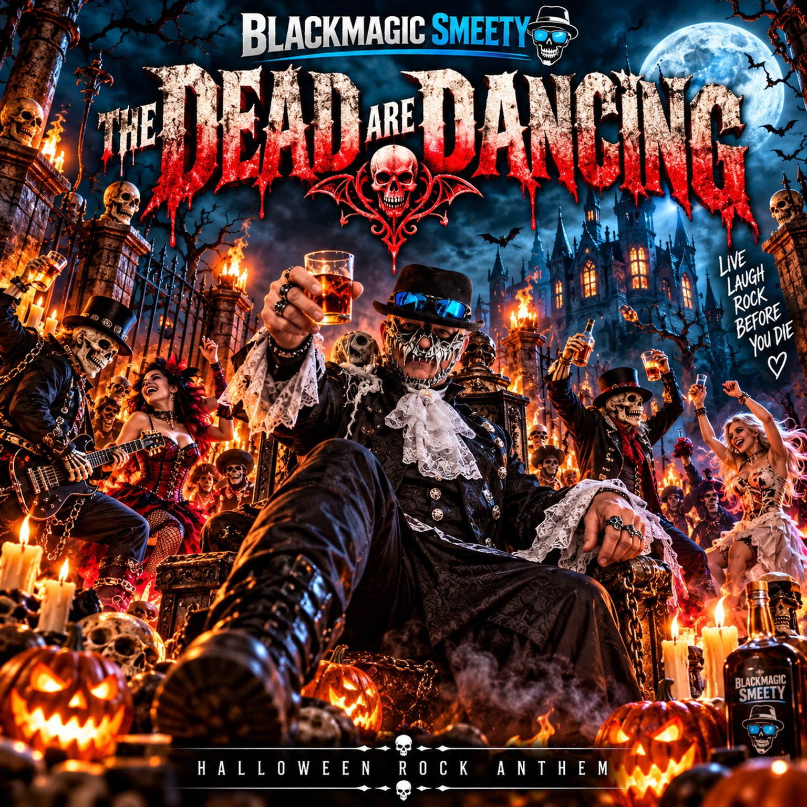
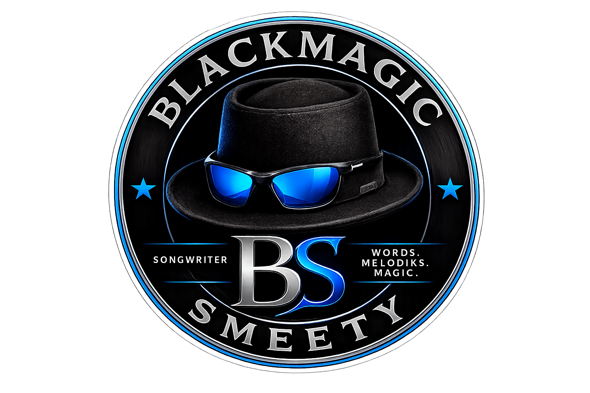

BLACKMAGIC SMEETY · SINGLE · 2026
THE DEAD ARE DANCING
SINGLE · 2026
Ein energiegeladener Halloween-Rock-Song mit Augenzwinkern.

BLACKMAGIC SMEETY← ZURÜCK ZU BLACKMAGIC SMEETY
BLACKMAGIC SMEETY · SINGLE · 2026
SINGLE · 2026
Ein energiegeladener Halloween-Rock-Song mit Augenzwinkern.